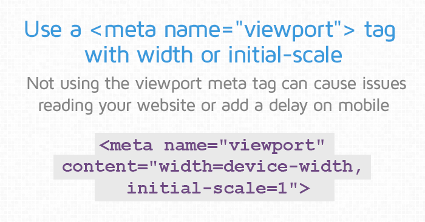

¿Qué es el Diseño Web Responsivo?
El diseño web responsivo es una técnica que permite adaptar el contenido a diferentes dispositivos.
Documentación y ejemplos prácticos sobre diseño adaptativo, viewport y media queries.
El diseño web responsivo es una técnica que permite adaptar el contenido a diferentes dispositivos.
El viewport y las media queries son fundamentales para controlar el comportamiento del diseño en distintos tamaños.
